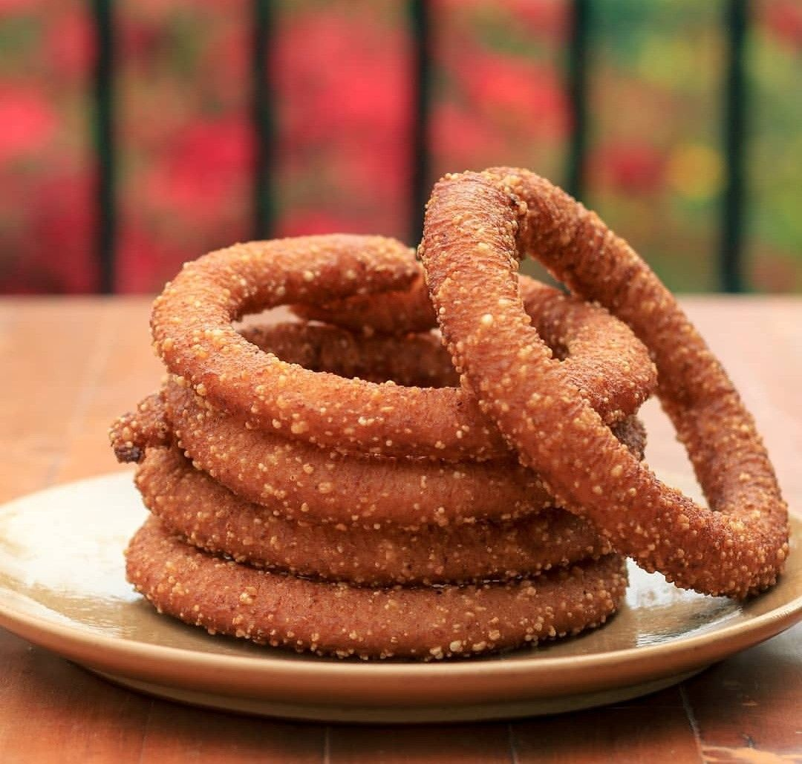
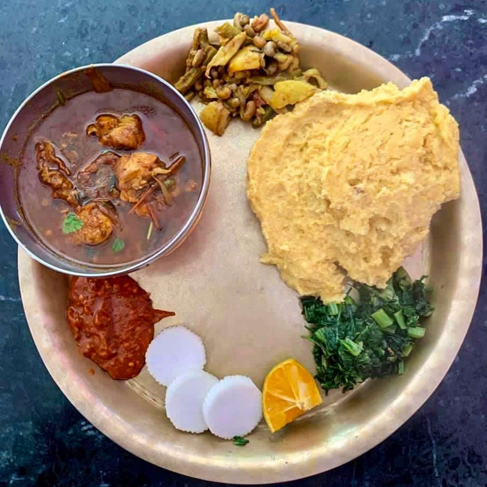
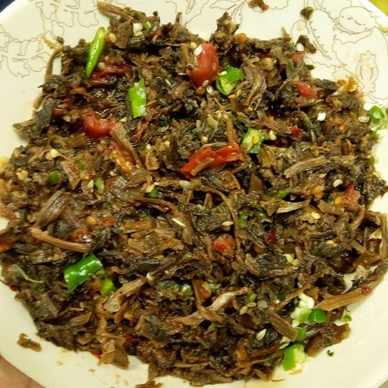
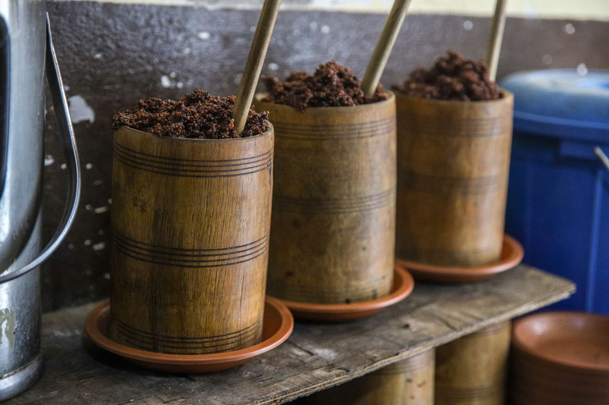

Nepali Traditional Food
Nepalise Cuisine combines a range of ingredients, techniques and characteristics from its neighboring countrie,s with its own gastronomic history. Nepalese dishes are generally healthier than most other South Asian cuisine, relying less on using fats and more on chunky vegetables, lean meats, pickled ingredients and salads.
Read More



